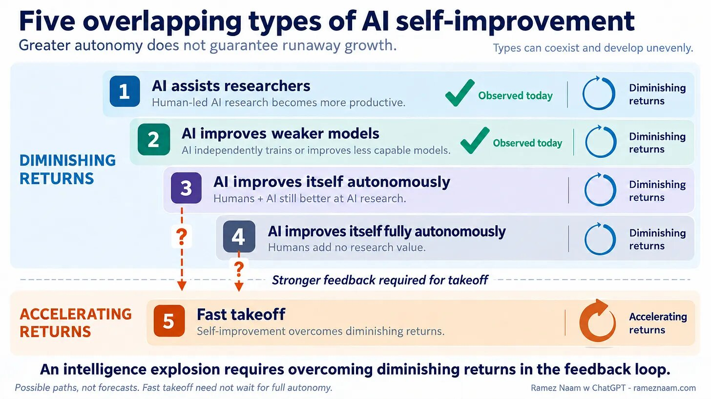

Frontier labs are spending an absolute fortune1 applying AI to build better AI. Anthropic claims that Claude now “leads” 26% of its AI R&D work. Many believe that we’re on a clear and accelerating path towards superintelligence in our lifetimes.
1 A guess: maybe $1B a year at Anthropic, out of a compute bill of nearly $9B for the first half of 2026. Claude Code’s creator alone used over 8 billion tokens in three months, and automated experiments probably dwarf that.
Not so fast, says the futurologist Ramez Naam. In Where’s the “intelligence explosion”?, he explores five overlapping ways AI can improve AI, and argues that a runaway takeoff can’t happen while all of them face “diminishing returns”.

The Maths Bit
The intuition behind a takeoff is simple: we keep building better tools, so the speed of progress (scientific or economic2) depends on how much progress we’ve already made.
2 We don’t talk about social progress. It has a yeasty tang of socialism and is remarkably difficult to price into a Series B.
3 The model, and the mapping of Naam’s numbers onto it, are ours, not Naam’s or his sources’. The mapping also assumes outside investment keeps flowing: in standard growth models, a sub-threshold loop’s percentage growth rate slows to a crawl without it.
Wisely, perhaps, Naam avoids equations. But we can explore the scenarios using a toy model3 that assumes the speed with which progress, ahem, progresses (written \(\frac{dP}{dt}\)) is proportional to the \(k\)-th power of the current level of progress (\(P^k\)).
\[ \frac{dP}{dt} \propto P^k \]
As we’ll see, solving this differential equation gives very different futures depending on the exponent \(k\).
Naam’s evidence bears on it:
- At OpenAI, researchers used 124× more tokens per person and shipped about 7× as many lines of code, but ran only 1.6× as many experiments.
- At Anthropic, staff report a productivity uplift of around 4×. Naam reckons doubling the pace of progress would need about 40×.
- Elsewhere, from chess engines to experiments across the sciences, more effort buys steeply diminishing returns.
Overall, Naam concludes:
Given our best current data, the AI self-improvement loop would need to be roughly 5–10× stronger to sustain itself, let alone run away.4
4 Concretely, he estimates that each extra point of AI capability (on Epoch’s ECI benchmark) buys 2–3% more research productivity, against a self-sustaining threshold of 15–19% from a model by Tom Cunningham and colleagues.
In the toy model, a loop that just sustains itself has \(k=1\). Being 5–10× too weak puts \(k\) at worst around 0.155. These are the “diminishing returns”.
5 It’s a floor: 0.15 assumes each advance makes the next one no easier. If progress stands on its own shoulders, the same 5–10× shortfall gives a higher \(k\).
Nothing to worry about, see?
Well, no.
Straw Man Singularity (\(k>1\))
Let’s start with what the piece is billed6 as refuting: “the ‘FOOM’ of Vernor Vinge novels”, a runaway loop with \(k>1\). Say \(k=2\), so that doubling progress quadruples its speed, and we start at a progress level of 0.1. Then progress at time \(t\) is:
6 The piece is a guest post. The FOOM framing comes from the host, Noah Smith, in his introduction.
\[ P(t) = \frac{1}{10 - t} \]
Watch what happens. Progress takes five units of time to double from 0.1 to 0.2, and another four to reach 1. Then it hits 10 at \(t=9.9\), and 100 at \(t=9.99\). At \(t=10\) the denominator is zero, and progress is infinite. Every \(k>1\) shares this finite-time blow-up; only the date changes.
Curves like this can fit the past remarkably well. In 1960 Heinz von Foerster and colleagues fitted one to two thousand years of world population. Their “Doomsday Equation” predicted 5.99 billion people by 1997; the actual figure was 5.92 billion. It also predicts infinite humans by Friday, 13 November 2026. At the time of writing, this looks ambitious.
Nothing real goes infinite, of course. So a blow-up just marks the point where the model stops working. If FOOM means \(k>1\), Naam’s data rule it out. Fair enough: it’s the easy target. The interesting case is the next one.
Self-Sustaining Singularity (\(k\approx1\))
Serious singularitarians bet on \(k\approx1\).
At \(k=1\) progress is “exponential”: progress, the rate of progress, the rate of the rate of progress and so on all keep growing. None ever hits infinity, but wait long enough and they are arbitrarily large.
Ray Kurzweil, the most influential singularitarian7, has spent his career here, or a hair above8. In The Law of Accelerating Returns he spells out what that means for the century we’re in:
7 He didn’t coin the term “singularity”. That was John von Neumann, as recalled by Stanislaw Ulam in 1958. Vernor Vinge made it famous in 1993; Kurzweil made it a career.
8 Strictly, he argues for a “double” exponential, “meaning that the rate of exponential growth is itself growing exponentially”. If \(P = e^{e^t}\) then \(\frac{dP}{dt} = P \ln P\): faster than \(P^1\), slower than \(P^k\) for any \(k>1\), so it still never reaches infinity in finite time.
it isn’t the case that we’ll experience 100 years of progress in the 21st century. Rather we’ll witness on the order of twenty thousand years of progress — at today’s rate of progress, that is.
Naam’s threshold tests exactly this: whether the loop can sustain itself (\(k \geq 1\)), “let alone run away”. The catch is which loop he measures: AI writing better AI software. Hardware, energy and capital sit outside it, as forces that “can keep driving rapid progress even if the loop can’t sustain itself”.
But they aren’t outside. Google has used AI to optimise its custom silicon, cut the energy used to cool its data centres and steer the plasma in a tokamak fusion reactor. And AI investment now depends on AI revenue, so capital is in the loop too. Leaving them out is no small omission: it’s Kurzweil’s whole point that accelerating returns are civilisational, encompassing everything.
So Naam gives the narrow loop a number, and declares the wide one exogenous: economist for “somebody else’s problem”.
Subjective Singularity (\(k<1\))
But let’s play by Naam’s rules: hardware, energy and capital don’t count, and \(k\) is a measly 0.15. Here’s the thing: that is still completely bonkers.
“Diminishing returns” in \(P^k\) doesn’t mean progress plateaus. At \(k = 0.15\), \(P(t)\) grows as \(t^{1.18}\). Both progress and the speed of progress (\(\frac{dP}{dt} \sim t^{0.18}\)) still climb forever.
And progress doesn’t need a vertical asymptote to break our brains; it just needs to outrun primate wetware that spent a few million years figuring out how to use twigs to eat ants. AI is already felling prize problems in batches. Whether it proves a major theorem every morning before coffee or every 30 seconds is academic; either way, it’s bewildering.
Alvin Toffler had a name for this back in 1970. “Future shock” is “the shattering stress and disorientation that we induce in individuals by subjecting them to too much change in too short a time.”
So maybe \(k\) is only 0.15, but lately that’s felt like more than enough.
Acknowledgements
Claude Opus 5.5 led 26% of this post.